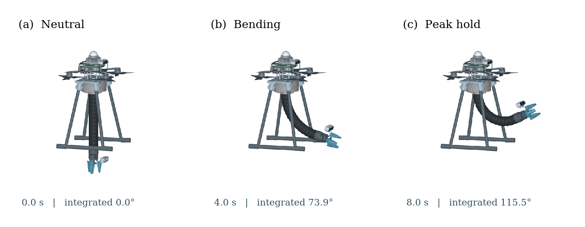
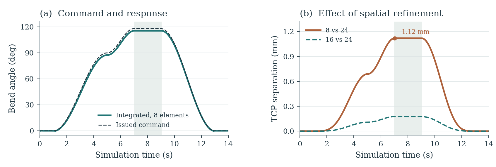

E1 · 柔性臂分段与积分核查 / 2026-11-18 18:19（北京时间）
把柔性臂从 8 段加密到 24 段，夹爪轨迹变了多少
同一固定机身弯臂动作运行六次。8 段与 24 段的夹爪最大间距为 1.121 mm，16 段与 24 段为 0.175 mm。当前工况可保留 8 段。
模型与场景

01同一台机器的三个积分姿态
8 段模型，固定相机。0、4、8 s 分别对应起始、弯曲和保持，画面角度由原始关节状态计算。

曲线与机制图

01指令响应与夹爪轨迹差
左图对照 8 段积分弯角与指令。右图将两种分段的夹爪位置逐时相减，纵轴用毫米，灰带为 118° 保持段。

视频回放
0114 秒实算动作回放
SUPER 机架和 Qingyu 臂在 8 段积分轨迹上的 CAD 回放。右侧同步列出三个模型的弯曲角与 8、24 段夹爪间距。
论文与报告
单页包含 CAD 三连帧、响应、夹爪分辨率误差、整条臂的误差表。可直接投屏。
原始坐标、单位和矢量文字，用于组会阅读和排版。
数据及运行记录
含 8、16、24 段条件，两个时间步、逐步有效性检查，以及粗细模型和时间收敛容差。
每个运行的上升和回程时差、保持误差、峰值与六组精细比较。
臂端、工具中心和 41 个弧长位置的最大差，含发生时刻、最差弧长坐标和逐组判定。
弯曲峰值、59° 往返交叉时差、保持偏差、力矩和接触次数。下行时差为负表示提前穿过该角度。
三个模型在 0.5 ms 积分步下的角度、端点世界坐标和相对臂起点的位移；位置差单位为毫米。
代码版本、SDK 文件摘要、通用参数读写与回读凭据。柔性比参数映射仍待厂家定义或实测。
列出对照条件、判据、数据读取方式、论文整理范围和后续依赖。
可用 NumPy 直接打开。含逐步积分诊断及 5 ms 的关节位置、速度、驱动、TCP 和完整中心线。
可用 NumPy 直接打开。含逐步积分诊断及 5 ms 的关节位置、速度、驱动、TCP 和完整中心线。
可用 NumPy 直接打开。含逐步积分诊断及 5 ms 的关节位置、速度、驱动、TCP 和完整中心线。
可用 NumPy 直接打开。含逐步积分诊断及 5 ms 的关节位置、速度、驱动、TCP 和完整中心线。
可用 NumPy 直接打开。含逐步积分诊断及 5 ms 的关节位置、速度、驱动、TCP 和完整中心线。
可用 NumPy 直接打开。含逐步积分诊断及 5 ms 的关节位置、速度、驱动、TCP 和完整中心线。
列出等效刚度、阻尼和惯量、质量、接触阳性对照及逐次有效性结果。